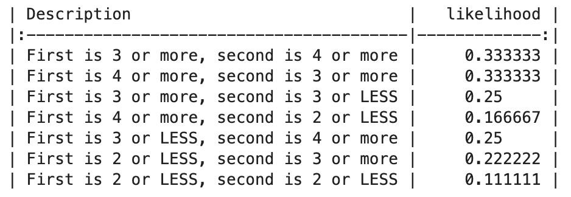

Probability (R)
Red means that the page does not exist yet
Orange means that the page is started
This concept is somewhat foundational to almost all the other content in this website, but is often overlooked in textbooks. An advantage about understanding it is that will give you a more complete understanding later when we go through concepts such as probability distributions such as binomial and normal distributions.
Probability of single outcomes
In informal language we might talk about there being a 50% chance of something happening, such as a 50% chance of getting “heads†when flipping a coin. At the risk of telling you what you already know, if there’s a 50% chance of getting “headsâ€, then we assume there is a 50% chance of getting “tailsâ€, because the likelihood of all outcomes put together must equal 100% or else it suggests there’s another outcome you haven’t considered. For example, if a flipped coin lands on heads 45% of the time, and on tails 45% of the time, then (45% + 45% =) 90% of the time it will land on heads or tails, which means 10% of the time it will do one or more other things (e.g. land on neither side). Going forward we will assume we’re using coins that can only land on heads or tails.
Within statistics we tend to use decimalised numbers rather than percentages, so a 10% chance is written as .1, a 50% chance is written as .5 and 100% chance is written as 1. This is important as when you have considered all possible outcomes you should be able to add their likelihoods up to make 1.
Probability of combinations of outcomes
Imagine that you want to predict the likelihood of flipping a coin on heads or tails a certain number of times in a row. The outcome of each coin flip is binary, i.e. there is only 1 possible outcome out of 2 options. If this isn’t a biased coin, we can calculate some basic expectations about what will happen after 2 flips of the coin:
Each flip of the coin has a 0.5 chance of landing on Heads.
If we wanted to calculate the likelihood of 2 flips of heads, there’s a 0.5 chance we get the first heads flip, and then another 0.5 chance we’ll get the second head flip. To summarise this, we can multiply both 0.5 chances together to get 0.25.
To summarise the likelihood of all combinations we could make the following table:
| First flip and likelihood | Second flip and likelihood | Overall likelihood |
| Heads (.5) | Heads (.5) | 0.5 * 0.5 = .25 |
| Heads (.5) | Tails (.5) | 0.5 * 0.5 = .25 |
| Tails (.5) | Heads (.5) | 0.5 * 0.5 = .25 |
| Tails (.5) | Tails (.5) | 0.5 * 0.5 = .25 |
| Likelihood of any of the above happening | .25 + .25 + .25 + .25 = 1 |
To achieve what you have above, you need to consider every combination of possible outcomes and calculate their likelihood. A useful quality check is to make sure that when you add the overall likelihoods together you get 1, otherwise…
If you have less than 1 it suggests you have overlooked an outcome
If you have more than 1 it suggests you have either
Overestimated the likelihood of a specific outcome
Treated overlapping outcomes as if they are mutually exclusive
Mutually exclusive outcomes
In the above example each of the four combinations are mutually exclusive, as they are specific and distinct. It is impossible that your flip of your coins was both:
heads and then tails
heads and then heads
Even though the first flip is heads in both outcomes, the second flip is distinct and so the two flips could not be both outcomes as they are exclusive.
However, there are some scenarios in which it’s less clear whether two outcomes are mutually exclusive. The chance of rolling any side of a die is 1 in 6. The chance of rolling a certain number and above can be calculated by counting the number of valid sides there are and then dividing by 6. For example, the chance of rolling 3 and above is 4 in 6 because there are 4 valid sides (3,4,5 and 6).
Imagine that you are rolling dice twice in a row - what is the likelihood that one role will be at least 3 and the other will be at least 4? Let’s start with an incorrect answer:
dice_outcomes <- data.frame(
Description <- c(
"First is 3 or more, second is 4 or more", # valid outcome
"First is 4 or more, second is 3 or more", # valid outcome
"First is 3 or more, second is 3 or LESS", # invalid outcome
"First is 4 or more, second is 2 or LESS", # invalid outcome
"First is 3 or LESS, second is 4 or more", # invalid outcome
"First is 2 or LESS, second is 3 or more", # invalid outcome
"First is 2 or LESS, second is 2 or LESS" # invalid outcome
),
likelihood = c(
(4/6) * (3/6), # "First is 3 or more, second is 4 or more", # valid outcome
(3/6) * (4/6), # "First is 4 or more, second is 3 or more", # valid outcome
(3/6) * (3/6), # "First is 3 or more, second is 3 or LESS", # invalid outcome
(3/6) * (2/6), # "First is 4 or more, second is 2 or LESS", # invalid outcome
(3/6) * (3/6), # "First is 3 or LESS, second is 4 or more", # invalid outcome
(2/6) * (4/6), # "First is 2 or LESS, second is 3 or more", # invalid outcome
(2/6) * (2/6) # "First is 2 or LESS, second is 2 or LESS" # invalid outcome
)
)
knitr::kable(dice_outcomes)| Description….c..First.is.3.or.more..second.is.4.or.more….First.is.4.or.more..second.is.3.or.more… | likelihood |
|---|---|
| First is 3 or more, second is 4 or more | 0.3333333 |
| First is 4 or more, second is 3 or more | 0.3333333 |
| First is 3 or more, second is 3 or LESS | 0.2500000 |
| First is 4 or more, second is 2 or LESS | 0.1666667 |
| First is 3 or LESS, second is 4 or more | 0.2500000 |
| First is 2 or LESS, second is 3 or more | 0.2222222 |
| First is 2 or LESS, second is 2 or LESS | 0.1111111 |
sum(dice_outcomes$likelihood)[1] 1.666667import pandas as pd
# Create a dictionary with the data
data = {
"Description": [
"First is 3 or more, second is 4 or more", # valid outcome
"First is 4 or more, second is 3 or more", # valid outcome
"First is 3 or more, second is 3 or LESS", # invalid outcome
"First is 4 or more, second is 2 or LESS", # invalid outcome
"First is 3 or LESS, second is 4 or more", # invalid outcome
"First is 2 or LESS, second is 3 or more", # invalid outcome
"First is 2 or LESS, second is 2 or LESS" # invalid outcome
],
"likelihood": [
(4 / 6) * (3 / 6), # valid outcome
(3 / 6) * (4 / 6), # valid outcome
(3 / 6) * (3 / 6), # invalid outcome
(3 / 6) * (2 / 6), # invalid outcome
(3 / 6) * (3 / 6), # invalid outcome
(2 / 6) * (4 / 6), # invalid outcome
(2 / 6) * (2 / 6) # invalid outcome
]
}
# Create a DataFrame from the dictionary
dice_outcomes = pd.DataFrame(data)
# Print the DataFrame
print(dice_outcomes.to_markdown(index=False))
# Calculate the sum of the "likelihood" column
total_likelihood = dice_outcomes["likelihood"].sum()
total_likelihood
1.6666666666666665When we add all the outcome likelihoods together we get more than 1, which makes me (and maybe you) sad. This reflects us (or me, you didn’t ask me to make the above table) treating some outcomes as if they are exclusive when they are not. For example, the two valid outcomes have overlap as they both include the likelihoods that both dice are of 4 or more. This has inflated the likelihood of the valid outcomes when you add these outcomes together, as you have doubled up on the overlap. To visualise this:
library(ggplot2)
ggplot() +
geom_rect(
mapping = aes(
xmin = 2.5,
xmax = 6.5,
ymin = 3.5,
ymax = 6.5
),
fill = "blue",
alpha = .5
) +
geom_rect(
mapping = aes(
xmin = 3.5,
xmax = 6.5,
ymin = 2.5,
ymax = 6.5
),
fill = "red",
alpha = .5
) +
theme_bw() +
theme(
plot.background = element_blank(),
#panel.grid.minor = element_line(color = "black", linewidth = 2),
panel.grid.major = element_blank(),
panel.grid.minor = element_blank(),
panel.border = element_blank()
) +
coord_fixed() +
xlab("First roll") +
ylab("Second roll") +
geom_vline(
xintercept =c(0.5,1.5,2.5,3.5,4.5, 5.5),
color="white"
) +
geom_hline(
yintercept =c(0.5,1.5,2.5,3.5,4.5, 5.5),
color="white"
) +
scale_x_continuous(breaks = seq(0, 6, by = 1)) +
scale_y_continuous(breaks = seq(0, 6, by = 1)) import matplotlib.pyplot as plt
# Define the rectangles
rectangles = [
plt.Rectangle((2.0, 3.0), 4, 3, color='blue', alpha=0.5),
plt.Rectangle((3.0, 2.0), 3, 4, color='red', alpha=0.5)
]
# Create a figure and axis
fig, ax = plt.subplots()
# Add rectangles to the plot
for rect in rectangles:
ax.add_patch(rect)
# Set axis limits
ax.set_xlim(0, 6)
ax.set_ylim(0, 6)
# Customize the plot
ax.set_aspect('equal', 'box')
ax.set_xlabel('First roll')
ax.set_ylabel('Second roll')
ax.set_xticks(range(7))
ax.set_yticks(range(7))
ax.grid(which='major', linestyle='-', linewidth='2', color='white')
ax.grid(which='minor', linestyle='-', color='white')
# Remove panel borders
ax.spines['top'].set_visible(False)
ax.spines['right'].set_visible(False)
ax.spines['bottom'].set_visible(False)
ax.spines['left'].set_visible(False)
# Show the plot
plt.show()
In the above visualisation of all possible dice role combinations, the proportion of the area covered reflects the likelihood of each valid combination highlighted: “First is 3 or more, second is 4 or more†in blue and “First is 4 or more, second is 3 or more†in red. As you can see, there is a lot of overlap (purple/pink), reflecting that these were not mutually exclusive possibilities, and so adding them together will inflate the estimated likelihood of either of them happening.
An elegant solution is to subtract the likelihood associated with repetition from your original calculation:
(4/6) * (3/6) + # "First is 3 or more, second is 4 or more", # valid outcome
(3/6) * (4/6) - # "First is 4 or more, second is 3 or more", # valid outcome
(3/6) * 3/6 # overlap between the two valid outcomes above [1] 0.4166667outcome1 = (4 / 6) * (3 / 6) # "First is 3 or more, second is 4 or more", valid outcome
outcome2 = (3 / 6) * (4 / 6) # "First is 4 or more, second is 3 or more", valid outcome
overlap = (3 / 6) * (3 / 6) # overlap between the two valid outcomes above
outcome1+outcome2-overlap0.41666666666666663To confirm this is correct, we can use R to count how many times out of 36 the dice will be valid:
valid_dice <- matrix(FALSE,nrow = 6,ncol = 6)
for(i in 1:6){
for(j in 1:6){
if(i >= 3 & j >= 4){
valid_dice[i,j] = TRUE
}
if(i >= 4 & j >= 3){
valid_dice[i,j] = TRUE
}
}
}
sum(valid_dice)/ # number of valid roll combinations
36 # total number of roll combinations[1] 0.4166667import numpy as np
valid_dice = np.zeros((6, 6), dtype=bool)
for i in range(6):
for j in range(6):
if i >= 2 and j >= 3:
valid_dice[i, j] = True
if i >= 3 and j >= 2:
valid_dice[i, j] = True
np.sum(valid_dice)/360.41666666666666663We get the same output.
The likelihood of something NOT happening is often a useful shortcut
As shown above, calculating of the probabilities can be done in more and less reliable and elegant ways. Generally speaking, an elegant calculation is less likely to result in error. One common example of how to be more elegant is how we address the chance of avoiding an undesirable outcome, such as a false-positive. If we ran three tests on random data, and accepted an \(\alpha\) threshold of .05 (i.e. a 5% chance that we would incorrectly identify an effect), then there are (at least) 2 ways you could calculate the likelihood of at least 1 false positive. The slower way:
\[ fp_1 + fp_2 + fp_3 + fp_{1,2} + fp_{1,3} + fp_{2,3} + fp_{1,2,3} \]
\(fp_1\) refers to a false positive only for test 1
\(fp_2\) refers to a false positive only for test 2
\(fp_3\) refers to a false positive only for test 3
\(fp_{1,2}\) refers to a false positive only for tests 1 and 2
\(fp_{1,3}\) refers to a false positive only for tests 1 and 3
\(fp_{2,3}\) refers to a false positive only for tests 2 and 3
\(fp_{1,2,3}\) refers to a false positive for all three tests
at_least_1_fp =
.05 * .95 * .95 + # false positive only for test 1
.95 * .05 * .95 + # false positive only for test 2
.95 * .95 * .05 + # false positive only for test 3
.05 * .05 * .95 + # false positive only for test 1 and 2
.05 * .95 * .05 + # false positive only for test 1 and 3
.95 * .05 * .05 + # false positive only for test 2 and 3
.05 * .05 * .05 # false positive only for test all tests
at_least_1_fp[1] 0.142625false_positive_probabilities = [
0.05 * 0.95 * 0.95, # false positive only for test 1
0.95 * 0.05 * 0.95, # false positive only for test 2
0.95 * 0.95 * 0.05, # false positive only for test 3
0.05 * 0.05 * 0.95, # false positive for test 1 and 2
0.05 * 0.95 * 0.05, # false positive for test 1 and 3
0.95 * 0.05 * 0.05, # false positive for test 2 and 3
0.05 * 0.05 * 0.05 # false positive for all tests
]
at_least_1_fp = 1 - (1 - sum(false_positive_probabilities))
at_least_1_fp0.142625To check this is correct, when we add the above number to the likelihood of 0 false-positives we should get 1:
.95 * .95 * .95 + # zero false positives
at_least_1_fp[1] 1.95 * .95 * .95 + at_least_1_fp1But, we could simply subtract the likelihood of zero false positives from 1:
1 - (.95 * .95 * .95)[1] 0.1426251 - (.95 * .95 * .95)0.142625and get the same result.
Note that it’s easier to do simple calculations like above if the p-value thresholds are consistent (e.g. .05 in this case), whereas inconsistent p-value thresholds between outcomes can lead to false assumptions about mutual exclusivity as described above.
Permutation analyses
Most psychology statistics books do not address this topic, so if you do not need to understand it to proceed with later pages.
Permutations refer to specific combinations of outcomes. To calculate the likelihood of permutations you need to calculate the number of valid outcomes that matches it (e.g. how many ways can you flip a coin to make 2 heads and 1 tails) and divided by the number of all possible permutations. Thus we need to calculate 2 things:
\(validPerms\): How many combinations are there in which heads was flipped 2 times and tails 1 times
\(allPerms\): How many unique combinations/permutations can you get when flipping a coin 3 times (not restricted to 2 heads and 1 tails)
We then divide \(validPerms\) by \(allOutcomes\) to calculate the likelihood of getting 2 out of 3 coins flipped as heads:
\[ \frac{validPerms}{allOutcomes} = \frac{nCr}{2^n} \]
Valid permutations
We start using the ! sign for factorial below. Factorial means that you multiply a number by every integer that is smaller than it before you reach 0. Some examples:
5! = 5 * 4 * 3 * 2 * 1 = 120
3! = 3 * 2 * 1 = 6
1! = 1
Note that languages like R use ! to indicate NOT, so make sure to use the appropriate function (e.g. “factorial†in R)
The formula for calculating how many valid permutations can be thought of as a mathematical shortcut to calculate how many permutations of all coins there are, and then a filter to only focus on unique permutations of heads and tails combinations:
\[ \frac{allPermutations}{uniqueValidCombinations} = \frac{n!}{heads!tails!} \]
\(n\) is the number of flips total
\(heads\) is the number of heads flips
\(tails\) is the number of tail flips
One way to understand the formula (in admittedly broad terms), is that the top half of the equation needs to capture all the ways coins can be combined, and the bottom half controls for the fact that some coins are identical as heads or tails. To illustrate the first half, lets give each coin an identity, coin 1, 2 and 3:
| Flip 1 | Flip 2 | Flip 3 |
|---|---|---|
| Coin 1 | Coin 2 | Coin 3 |
| Coin 1 | Coin 3 | Coin 2 |
| Coin 2 | Coin 1 | Coin 3 |
| Coin 2 | Coin 3 | Coin 1 |
| Coin 3 | Coin 1 | Coin 2 |
| Coin 3 | Coin 2 | Coin 1 |
So there are 6 permutations. Fortunately, we don’t need to draw out all permutations each time, we can calculate this through a simple iterative process:
The first coin will have 3 positions it can be in
The second coin will have 2 positions it can be in
The third coin will only have 1 position it can be in
This means you can multiply these together to get the total possible combinations of coin positions: 3 * 2 * 1, or more elegantly written as 3! (see factorials above).
Now that we’ve used this technique to get every permutation of coins, we can now allocate heads and tails to the coins we have, even though this will end with repetition (which we will deal with later). In this example, let’s say coins 1 and 2 are heads, and coin 3 is tails. Our grid will now look as follows:
| Flip 1 | Flip 2 | Flip 3 |
|---|---|---|
| Heads | Heads | Tails |
| Heads | Tails | Heads |
| Heads | Heads | Tails |
| Heads | Tails | Heads |
| Tails | Heads | Heads |
| Tails | Heads | Heads |
Whilst this is somewhat helpful, there’s some redundant rows which are identical to each other. One way to calculate this is to calculate the permutations of coins within heads and tails separately, as the number of permutations there are within each of these captures how many repetitions there are driven by multiple instances of each type of coinflip. If that’s not clear, perhaps the following will help:
Coins 1 and 2 are heads, so we can see that 2! (2 * 1 = 2) reflects the only 2 permutations:
| Flip 1 | Flip 2 |
|---|---|
| Coin 1 | Coin 2 |
| Coin 2 | Coin 1 |
These 2 permutations will be “heads†in the table above, and so we know that we can divide the total number of permutations by 2 as half the sequences have coin 1 first and coin 2 later, and the other half have coin 2 first and coin 1 later. As there is only 1 tail coin you would only divide the permutations by 1! which is 1 anyway. So back to the formula:
\[ \frac{n!}{heads!*tails} = \frac{3!}{2! * 1!} = \frac{3*2*1}{2*1 * 1} = \frac{6}{2} = 3 \]
3 permutations of 2 heads and 1 tail. Going back to the formula above:
\[ \frac{validPerms}{allOutcomes} = \frac{3}{2^n} = \frac{3}{8} \]
So there’s a 3 in 8 chance of flipping 2 heads and 1 tails.
Question 1
What is the likelihood of flipping a (non-biased) coin heads and then tails?
Question 2
What is the likelihood of rolling 3 sixes in a row?